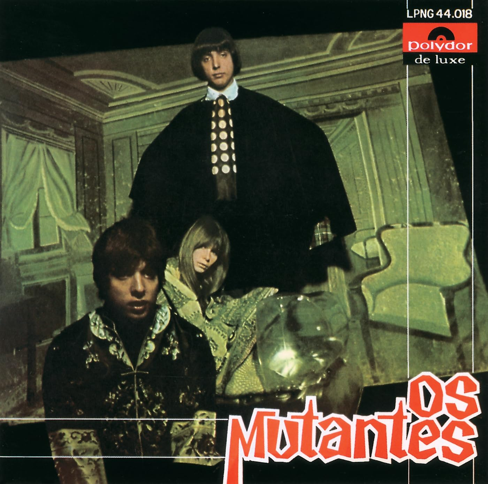
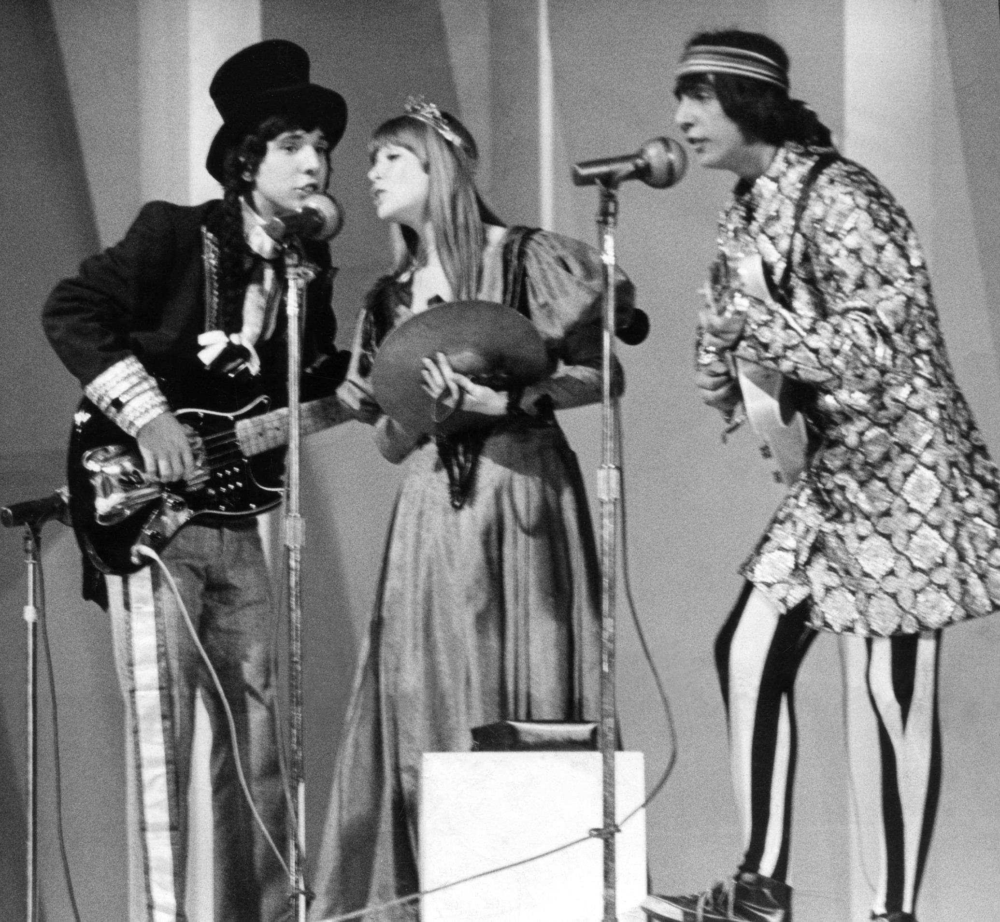

Os Mutantes (1968)
Os Mutantes
Arnaldo Baptista, Rita Lee, and Sérgio Dias
Os Mutantes (The Mutants) is[1] a band started in 1966, during the height of the Tropicália movement, which sought to mix popular Brazilian musical tradition with more avant-garde, foreign styles. In this line, their 1968 self-titled debut album is a hodgepodge of influences, from The Beatles to Jimi Hendrix, Baião, and African percussion, all backed by a generous heap of unconventional instrumentation and abstract lyricism, jumping between songs of love and critiques of the military dictatorship.
This is what peak performance looks like
Os Mutantes are also notable for their innovation, at a time where electric instruments were expensive and the phonographic industry in Brazil was far behind that of countries like the United States or England. Cláudio César Dias Baptista, the older brother of Sérgio Dias, built himself the guitar and bass used in most Mutantes records, as well as effects pedals, amplifiers, etc.
T/L Note: Based in part on the English version released on their "Tecnicolor" album.
00:22
I wanted to sing, my song lighted by the sun
Que eu quis cantar minha canção iluminada de sol
00:28
I drew the flags over the sticks of the wind
Soltei os panos sobre os mastros no ar
00:32
I let loose tigers and lions on the backyards
Soltei os tigres e os leões nos quintais
00:37
But all the people in the dining room
Mas as pessoas na sala de jantar
00:41
Are too busy living and dying
São ocupadas em nascer e morrer
00:51
I had a dagger of pure shiny steel made
Mandei fazer de puro aço luminoso um punhal
00:58
To kill my love and I did
Para matar o meu amor e matei
01:02
At five o' clock on the Central Avenue
Às cinco horas na Avenida Central
01:06
But all the people in the dining room
Mas as pessoas na sala de jantar
01:10
Are too busy living and dying
São ocupadas em nascer e morrer
01:21
I had them plant dream leaves on the solar's garden
Mandei plantar folhas de sonho no jardim do solar
01:27
The leaves know how to search for the sun
As folhas sabem procurar pelo Sol
01:31
And the roots to search, search
E as raízes procurar, procurar
01:35
But all the people in the dining room
Mas as pessoas na sala de jantar
01:39
These people in the dining room
Essas pessoas da sala de jantar
01:43
They're the people in the dining room
São as pessoas da sala de jantar
01:47
But all the people in the dining room
Mas as pessoas na sala de jantar
01:51
Are busy living and dying
São ocupadas em nascer e morrer
02:29
These people in the dining room
Essas pessoas na sala de jantar
02:34
These people in the dining room
Essas pessoas na sala de jantar
02:38
These people in the dining room
Essas pessoas na sala de jantar
02:42
These people in the dining room
Essas pessoas na sala de jantar
02:45
These people in the dining room
Essas pessoas na sala de jantar
02:48
These people in the dining room
Essas pessoas na sala de jantar
02:52
These people in the dining room
Essas pessoas na sala de jantar
02:55
These people in the dining room
Essas pessoas na sala de jantar
02:58
These people in the dining room
Essas pessoas na sala de jantar
03:01
These people in the dining room
Essas pessoas na sala de jantar
03:04
These people in the—
Essas pessoas na sala—
03:16
— Pass me the salad, please
— Me passa a salada pra mim, por favor
03:20
— Pass me the bread, please, just one more piece
— Passa o pão, por favor, só mais um pedacinho
00:00
— Cough, everybody coughing!
— Tosse, todo mundo tossindo!
00:01
— Ha ha ha ha!
— Ha ha ha ha!
00:23
She's my girl
Ela é minha menina
00:29
And I'm her boy
E eu sou o menino dela
00:34
She's my love
Ela é o meu amor
00:40
And I'm her love, entirely hers
E eu sou o amor todinho dela
00:45
Come on, huh!
Chama, hu!
00:47
The silver moon hid away
A lua prateada se escondeu
00:52
And the golden sun appeared
E o sol dourado apareceu
00:58
A new day dawned, smelling of joy
Amanheceu um lindo dia, cheirando alegria
01:05
Because I dreamed and woke up thinking about her
Pois eu sonhei e acordei pensando nela
01:12
Because she's my girl
Pois ela é minha menina
01:18
And I'm her boy
E eu sou o menino dela
01:22
She's my love
Ela é o meu amor
01:29
And I'm her love, entirely hers
E eu sou o amor todinho dela
01:39
The rosebush has already sprouted roses
A roseira já deu rosas
01:44
And the rose I earned was her
E a rosa que eu ganhei foi ela
01:50
For her, I let my heart get in front of reason
Por ela eu ponho o meu coração na frente da razão
01:56
And I'll tell everyone how much I like her
E vou dizer pra todo mundo como gosto dela
02:04
Because she's my girl
Pois ela é minha menina
02:10
And I'm her boy
E eu sou o menino dela
02:15
She's my love
Ela é o meu amor
02:21
And I'm her love, entirely hers
E eu sou o amor todinho dela
02:26
Uh! (Go, Jorge!)
Uh! (Vai, Jorge!)
03:08
The silver moon hid away
A lua prateada se escondeu
03:14
And the golden sun appeared
E o sol dourado apareceu
03:19
A new day dawned, smelling of joy
Amanheceu um lindo dia, cheirando alegria
03:26
Because I dreamed and woke up thinking about her
Pois eu sonhei e acordei pensando nela
03:33
Because she's my girl
Pois ela é minha menina
03:39
And I'm her boy
E eu sou o menino dela
03:44
She's my love
Ela é o meu amor
03:50
And I'm her love, entirely hers
E eu sou o amor todinho dela
03:56
My girl, my girl
Minha menina, minha menina
04:09
My girl, my girl
Minha menina, minha menina
04:13
My girl, my girl
Minha menina, minha menina
04:20
My girl, my girl
Minha menina, minha menina
00:07
My watch stopped
Meu relógio parou
00:18
It forever gave up being
Desistiu pra sempre de ser
00:23
Anti-magnetic
Antimagnético
00:29
Twenty two jewels
Vinte e dois rubis
00:39
I wound it up and thought
Eu dei corda e pensei
00:46
That the watch would live
Que o relógio iria viver
00:52
To tell the time
Pra dizer a hora
00:57
Of your arrival
De você chegar
01:07
It didn't run and I cried
Não andou e eu chorei
01:13
Two still hands, laughing
Dois ponteiros parados a rir
01:19
They're waterproof
São à prova d'água
01:23
Twenty two jewels
Vinte e dois rubis
01:37
What great luck of mine
Que vantagem eu levei
01:45
To have a watch
Em ter um relógio
01:47
That is Swiss or English
Que é suíço ou inglês
01:53
And doesn't run
Sem andar
01:56
What time will you arrive?
A que horas você vai chegar?
02:40
And I threw myself into the sea
E no mar me atirei
02:47
Watch in hands, and thought
Com o relógio nas mãos e pensei
02:52
It's waterproof
Ele é à prova d'água
02:56
Twenty two jewels
Vinte dois rubis
T/L Note: Goodbye Maria Fulô—fulô being a corruption of "flor," meaning flower. Goodbye Mary Flower!
00:56
Goodbye, I'm going, my dear
Adeus, vou-me embora, meu bem
00:59
Crying doesn't help anyone
Chorar não ajuda ninguém
01:02
Wipe your tears of pain
Enxugue o seu pranto de dor
01:04
For the drought has only just started
Que a seca mal começou
01:13
Goodbye, I'm going, my dear
Adeus, vou-me embora, meu bem
01:16
Crying doesn't help anyone
Chorar não ajuda ninguém
01:18
Wipe your tears of pain
Enxugue o seu pranto de dor
01:21
For the drought has only just started
Que a seca mal começou
01:30
Goodbye, I'm going, Maria
Adeus, vou-me embora, Maria
01:33
Flower of my heart
Fulô do meu coração
01:36
I'll come back someday
Eu voltarei qualquer dia
01:38
It just needs to rain in the backlands
É só chover no sertão
01:41
And the days until my return
E os dias da minha volta
01:44
I count on my hand
Eu conto na minha mão
01:47
Goodbye Maria Fulô
Adeus, Maria Fulô
01:50
The quince tree dried out
Marmeleiro amarelou
01:53
Goodbye Maria Fulô
Adeus, Maria Fulô
01:56
The water spring ran dry
Olho d'água esturricou
02:04
Goodbye, I'm going, my dear
Adeus, vou-me embora, meu bem
02:07
Crying doesn't help anyone
Chorar não ajuda ninguém
02:10
Wipe your tears of pain
Enxugue seu pranto de dor
02:12
For the drought has only just started
Que a seca mal começou
02:18
For the drought has only just started
Que a seca mal começou
02:23
For the drought has only just started
Que a seca mal começou
02:29
For the drought has only just started
Que a seca mal começou
|"Baby," famous in the voice of Gal Costa, parodies the upper-class, westernized culture that was on the rise at the time of its writing, a consequence of the dictatorship's push for "modernization."|
00:16
You
Você
00:20
Need to know of the pool
Precisa saber da piscina
00:23
Of margarine, of Carolina, of gasoline
Da margarina, da Carolina, da gasolina
00:30
You need to know about me
Você precisa saber de mim
00:40
Baby, baby
Baby, baby
00:45
I know that's how it is
Eu sei que é assim
00:49
Baby, baby
Baby, baby
00:54
I know that's how it is
Eu sei que é assim
00:58
You
Você
01:01
Need to have an ice cream
Precisa tomar um sorvete
01:04
In the diner
Na lanchonete
01:06
Walk with us, see me up close
Andar com gente, me ver de perto
01:11
Listen to that Roberto song
Ouvir aquela canção do Roberto
01:21
Baby, baby
Baby, baby
01:26
How long has it been
Há quanto tempo
01:30
Baby, baby
Baby, baby
01:35
How long has it been
Há quanto tempo
01:39
You
Você
01:42
Need to learn English
Precisa aprender inglês
01:46
You need to learn what I know
Precisa aprender o que eu sei
01:49
And what I don't know anymore
E o que eu não sei mais
01:51
(And what I don't know anymore)
(E o que eu não sei mais)
01:56
I don't know
Não sei
01:59
With me it's all been blue
Comigo vai tudo azul
02:03
With you everything's in peace
Contigo vai tudo em paz
02:08
We live in the best city
Vivemos na melhor cidade
02:10
Of South America
Da América do Sul
02:12
Of South America
Da América do Sul
02:15
You need
Você precisa
02:17
You need
Você precisa
02:22
I don't know
Não sei
02:25
Read it on my shirt
Leia na minha camisa
02:31
Baby, baby, I love you
Baby, baby, I love you
02:39
Baby, baby, I love you
Baby, baby, I love you
02:47
Baby, baby, I love you
Baby, baby, I love you
02:56
Baby, baby...
Baby, baby...
00:05
Mr. F
O Senhor F
00:08
Dreams of being
Vive a querer
00:11
Mr. X
Ser Senhor X
00:14
But is afraid of never going back
Mas tem medo de nunca voltar
00:17
To being Mr. F again
A ser o Senhor F outra vez
00:21
Mr. X
O Senhor X
00:25
Is the hero (X)
É o herói (X)
00:28
That on TV (X)
Que na TV (X)
00:31
Never loses his hat
Nunca perde o seu chapéu
00:34
And makes Mr. F dream
E faz o Senhor F sonhar
00:38
Dream of having
Sonhar em ter
00:41
For the others to see
Pros outros ver
00:45
Blue eyes
Olhos azuis
00:48
A car just like Mr. X
Ter um carro igual ao de X
00:52
And winning over the boss' wife
E conquistar a mulher do patrão
00:59
Give your boss a kick
Dê um chute no patrão
01:03
Give your boss a kick
Dê um chute no patrão
01:05
Give your boss a kick
Dê um chute no patrão
(instrumental)
01:28
You also
Você também
01:31
Want to be somebody
Quer ser alguém
01:35
To abandon it all
Abandonar
01:38
But are afraid of forgetting
Mas tem medo de esquecer
01:41
Your handkerchief and documents again
O lenço e o documento outra vez
01:46
Give your boss a kick (Extra, extra, extra)
Dê um chute no patrão (Extra, extra, extra)
01:49
Give your boss a kick (Give your boss a kick)
Dê um chute no patrão (Dê um chute no patrão)
01:53
Give your boss a kick
Dê um chute no patrão
|Now, for "Bat Macumba," Macumba being a blanket term for the wide umbrella of Afro-Brazilian religions (often pejorative, though that's not the case here.) Notice the shape that the lyrics make, and see if you can relate it to a pun on the song title about a certain masked vigilante.|
00:23
Bat Macumba ê ê, Bat Macumba obá
00:29
Bat Macumba ê ê, Bat Macumba obá
00:32
Bat Macumba ê ê, Bat Macumba obá
00:36
Bat Macumba ê ê, Bat Macumba o
00:40
Bat Macumba ê ê, Bat Macumba
00:44
Bat Macumba ê ê, Bat Macum
00:48
Bat Macumba ê ê, Bat Ma
00:52
Bat Macumba ê ê, Bat
00:56
Bat Macumba ê ê, Ba
01:00
Bat Macumba ê ê
01:03
Bat Macumba ê
01:06
Bat Macumba
01:10
Bat Macum
01:13
Bat Ma
01:18
Bat
01:22
Ba
01:25
Bat
01:30
Bat Ma
01:33
Bat Macum
01:37
Bat Macumb a
01:41
Bat Macumba ê
01:45
Bat Macumba ê ê
01:49
Bat Macumba ê ê, Ba
01:54
Bat Macumba ê ê, Bat
01:58
Bat Macumba ê ê, Bat Ma
02:03
Bat Macumba ê ê, Bat Macum
02:06
Bat Macumba ê ê, Bat Macumba
02:10
Bat Macumba ê ê, Bat Macumba o
02:14
Bat Macumba ê ê, Bat Macumba obá
02:18
Bat Macumba ê ê, Bat Macumba obá
02:22
Bat Macumba ê ê, Bat Macumba obá
03:02
Bat Macumba ê ê, Bat Macumba obá
T/L Note: This song is in french, which I do not speak. See footnote[2] for the source for this translation. Thank you to @frenchrescue on YouTube!
00:18
The first happiness of the day
Le premier bonheur du jour
00:23
It's a ribbon of sunshine
C'est un ruban de soleil
00:28
Which is wound around your hand
Qui s'enroule sur ta main
00:33
And gently strokes my shoulder
Et caresse mon épaule
00:38
It's the breath of the sea
C'est la souffle de la mère
00:43
And the beach that awaits
Et la plage qui attend
00:48
It's the bird that sang
C'est l'oiseau qui a chanté
00:53
On the branch of the fig tree
Sur la branche du figuier
01:48
The first sorrow of the day
La premier chagrin du jour
01:52
It's the door that closes
C'est la porte qui se ferme
01:57
The car that goes away
La voiture qui s'en va
02:02
The silence that settles
Le silence qui s'installe
02:07
But you come back soon
Mais bien vite tu reviens
02:12
And my life is getting back to normal
Et ma vie reprend son cours
02:17
The last happiness of the day
Le denier bonheur du jour
02:22
It's the lamp that switched off
C'est la lampe qui s'éteint
00:23
Four hundred cruzeiros
Quatrocentos cruzeiros
00:28
Old men buy, frightened
Velhos compram com medo
00:31
From the ticket booth
Da mão do bilheteiro
00:34
Admissions to the ghost train
As entradas do trem fantasma
00:39
Him and his girlfriend
Ele e a namorada
00:43
He doesn't think of anything
Ele não pensa em nada
00:46
She gets scared
Ela fica assustada
00:51
Four hundred cruzeiros of power
Quatrocentos cruzeiros de força
00:55
Drag the young man and the lady
Arrastam o rapaz e a moça
00:59
To the place in
Para o lugar em
01:01
Shiny CinemaScope
CinemaScope brilhante
01:06
The giant mountain
A montanha gigante
01:08
Of green generals
De generais verdejantes
01:13
And it appears in the distance
E aparece distante
01:16
The train on the shiny mirror
O trem no espelho brilhante
01:20
The kiss, the first kiss
O beijo, o primeiro beijo
01:24
Shatters the mirror
Arrebenta o espelho
01:38
Four hundred cruzeiros
Quatrocentos cruzeiros
01:42
Four hundred bats of power
Quatrocentos morcegos de força
01:47
The kiss, the young man, and the lady
O beijo, o rapaz e a moça
01:51
The underwater train
O trem dentro d'água
01:53
The still pool
A piscina parada
01:57
She doesn't think of anything
Ela não pensa em nada
02:01
He thinks but doesn't say
Ele pensa e não diz
02:04
Where there's much water everything's happy
Onde tem muita água tudo é feliz
02:09
The first kiss
O primeiro beijo
02:12
Four hundred cruzeiros
Quatrocentos cruzeiros
02:16
Joe forty HPs of thrills
Zé quarenta HPs de emoção
02:20
Coffin Joe
O Zé do Caixão
02:23
Brings the creatures of creation
Traz os bichos da criação
02:29
To the gate and—
Até o portão e—
02:33
The session's over
Terminou a sessão
02:36
Four hundred cruzeiros
Quatrocentos cruzeiros
02:39
Old men buy, frightened
Velhos compram com medo
02:42
Him and his girlfriend
Ele e a namorada
02:46
She doesn't think of anything
Ela não pensa em nada
02:50
He secretly thinks
Ele pensa em segredo
02:54
He secretly thinks
Ele pensa em segredo
02:58
He secretly thinks
Ele pensa em segredo
03:02
He secretly thinks
Ele pensa em segredo
03:05
He secretly thinks
Ele pensa em segredo...
T/L Note: Cover of "Once Was a Time I Thought" by "The Mamas & The Papas."
00:00
Hallelujah
Aleluia
00:11
I want to be with my Lord
Eu quero estar com meu Senhor
00:28
There's always a time in time where the body of man rots
Há sempre um tempo no tempo em que o corpo do homem apodrece
00:32
And his tired, sorrowful soul sinks into the ground
E sua alma cansada, penada, se afunda no chão
00:35
And the wizard of luxury, like a friar, crying on a shelf, sycophant of trash
E o bruxo do luxo baixado o capucho chorando num nicho capacho do lixo
00:40
Whims will not be coming back
Caprichos não mais voltarão
00:42
There once was time where time stopped passing by
Já houve um tempo em que o tempo parou de passar
00:47
And the so-called homo sapiens didn't know how to harness it
E um tal de homo sapiens não soube disso aproveitar
00:51
Crying, smiling, talking about shutting up
Chorando, sorrindo, falando em calar
00:54
Thinking of thinking once time stops passing by
Pensando em pensar quando o tempo parar de passar
00:58
There's always a time in time where the body of man rots
Há sempre um tempo no tempo em que o corpo do homem apodrece
01:01
And his tired, sorrowful soul sinks into the ground
E sua alma cansada, penada, se afunda no chão
01:05
And the wizard of luxury, like a friar, crying on a shelf, sycophant of trash
E o bruxo do luxo baixado o capucho chorando num nicho capacho do lixo
01:10
Whims will not be coming back
Caprichos não mais voltarão
01:12
But if between tears you find yourself and you think you're crying
Mas se entre lágrimas você se achar e pensar que está a chorar
01:19
This was the time in which time is
Este era o tempo em que o tempo é
00:26
Hail Gengis Khan
Ave Gengis Khan
00:37
Hail Gengis Khan
Ave Gengis Khan
(instrumental)
02:43
Hail Gengis Khan
Ave Gengis Khan
02:54
Hail Gengis Khan
Ave Gengis Khan
Footnotes
- [1]: Nowadays, only Sérgio Dias is left of the original formation. Rita Lee was kicked out of the band in 1972 and unfortunately passed away in 2023, while Arnaldo Baptista left in 1973 due to issues with drug abuse (he is doing much better now!) Both of them led successful solo careers, with Rita Lee often being called the Brazilian "Queen of Rock."
- [2]: Le Premier Bonheur du Jour Translation by frenchrescue